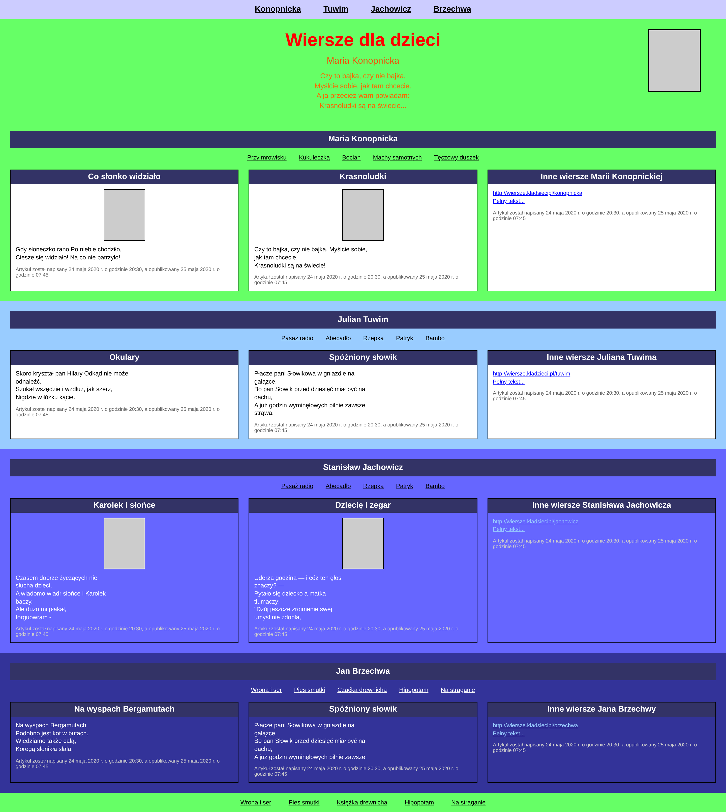
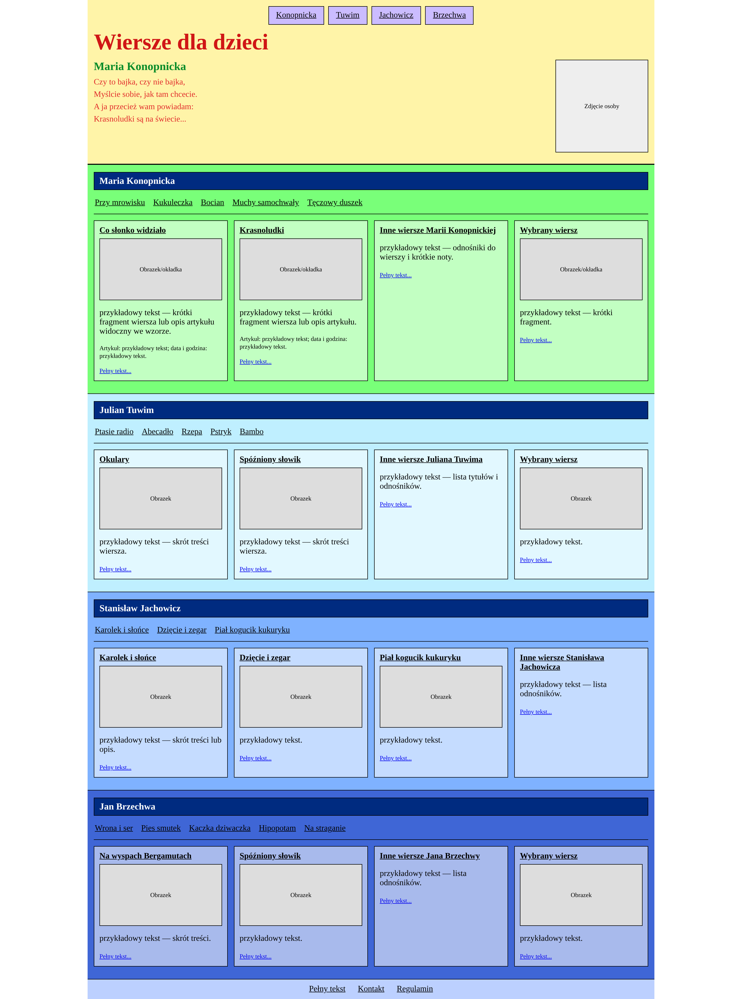
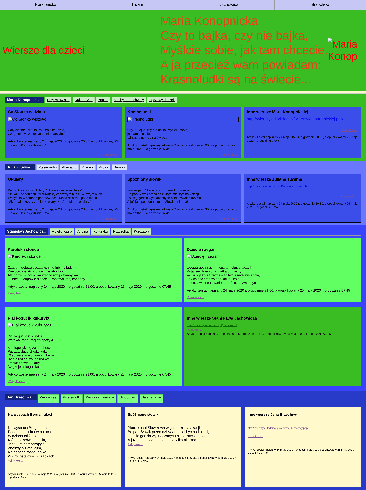
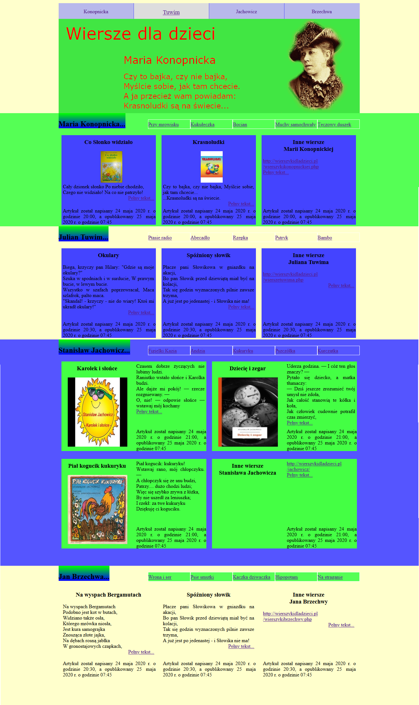

Specjalny prompt do wykorzystania:
Ranking „Bez Promptu”
- Najlepszy (Only Perplexity)
- Sonar (Only Perplexity)
- Grok 4
- Gemini 2.5 Pro
- Claude 4 Sonnet
Ranking „Ze Specjalnym Promptem”
- GPT-5 Thinking (Only ChatGPT+ także Perplexity)
- Sonar (Only Perplexity)
- Labolatorium (Only Perplexity Pro)
- Claude 4 Thinking
- Grok 4
- o3 (Only ChatGPT+ także Perplexity)
- Najlepszy (Only Perplexity)
- Claude 4 Sonnet
- Gemini 2.5 Pro
Średnio AI radzą sobie o 70% lepiej z zastosowaniem specjalnego prompta!
Najlepsze prace AI (galeria)



Oryginał
